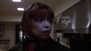

Изгоняющий дьявола
1973 (+2 сиквела, приквел и цыфровой ремастер первой части)

Сатана: When you see it, you'll shit bricks
Сюжет: С невеликовозрастной девочкой по имени Риган начинает происходить всякая нездоровая хуйня. То блюет зелененьким, то вдруг матерится разными голосами на разных языках, то писается на ковер при всем честном народе. Мать обращается к врачам, которые не замедляют с постановлением многочисленных диагнозов, и лечат девочку, всем, чем только возможно. Однако, не помогает. И ВНЕЗАПНО, мать начинает догадываться, что в девочку вселился дьявол.
Значимость:
- Считается самым страшным хоррор-фильмом всех времен и народов. Впрочем, такой же статус иногда приписывается "Сиянию".
- Во время съемок или вскоре после их окончания умерли или погибли девять человек, имевшие отношение к фильму.
- Мастурбация распятием в исполнении двенадцатилетней девочки! Одна из легендарных сцен.
- Именно благодаря этому фильму многие узнали, что один из самых верных признаков одержимости - прокручивающаяся на 360 градусов голова.
- Лицо Риган — один из самых популярных скримеров.